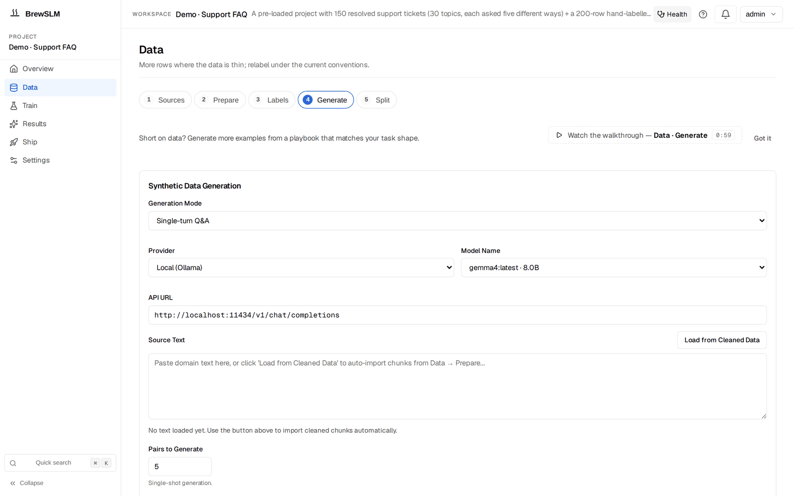

Synthetic data and the review queue
After this lesson you can generate synthetic training data with a playbook, work the review queue of pending rows, and bulk-drop rejected rows by reason instead of accepting or discarding everything.
Your Track 2 dataset had a comment: # ... in practice, hundreds more rows. Producing those rows — covering the hard cases, keeping balance — is real work. BrewSLM's synthetic-data surface generates candidates and routes them through review so quantity never costs you quality.
Recipe-aware playbooks
A synthetic playbook generates rows that match your project's task shape and scoring mode — not generic text, but examples shaped like the ones the model will be scored on. The surface is Data → Generate (/project/<id>/data?step=synthetic). The playbooks are in the step's Details drawer under Playbooks (the Synthetic data playbooks panel), which shows only the modes your project's task type has; Playbook center next to it lists every playbook and its last run. Each playbook is one mode for one task type. On public BrewSLM main:
| Task type (recipe) | Playbook modes |
|---|---|
| classification | Paraphrase positives, Hard negatives, Balance class distribution, Target a failure cluster |
| qa-sft | Paraphrase positives, Target a failure cluster |
| generic-sft | Paraphrase positives, Hard negatives, Target a failure cluster, Multi-turn dialogues (written from your document passages) |
| span-extraction | Paraphrase positives, Hard negatives, Target a failure cluster |
| rag-protocol | Paraphrase positives, Refusals, Format robustness |
| summarization | Paraphrase positives, Target a failure cluster |
| code-review | Paraphrase positives, Hard negatives, Target a failure cluster |
| code-findings | Seed a defect, Hard negatives, Target a failure cluster |
| code-remediation | Remediate findings, Write code examples |
| structured-plan | Scenario grid |
Source: backend/app/services/synth_playbooks/ (mode labels from PlaybookPickerPanel.tsx) on public BrewSLM main. You pick a backend and model for the playbook; start with a local Ollama model. The form at the top of the step, with its Generation Mode (Single-turn Q&A, Multi-turn Conversations, or PII / NER span extraction), source text and number of pairs, is the older manual generator (Q&A pairs, conversations or spans from source text); its rows go through the same review queue. Either way, generation runs as a background Job (the same jobs framework that powers training and RAG comparison), so a large batch doesn't block the request; the notification bell tracks it to completion.

Nothing lands trusted: review_status = pending
Every generated row arrives with review_status="pending" and is written to the project's synthetic JSONL. It is not training data yet. This is the platform enforcing a Track 1 rule — never train on data you haven't looked at — as a workflow, not a good intention.
# a row from the classification paraphrase playbook, awaiting review
{ "text": "shipping was slow but the product is great",
"label": "positive",
"synth_confidence": 1.0,
"synth_source": "playbook:classification:positives_paraphrase",
"review_status": "pending" }The playbook sets synth_confidence itself: this one starts at 1.0 and cuts it to 0.25 when the model invents a label that isn't one of your known classes.
Provenance on every picked row
Notice the synth_source and synth_confidence. The review queue groups rows by synth_source by default, so you can trace a bad example back to the playbook that made it, tick its rows and accept or reject them together.
Work the review queue
The queue is under Data → Labels → Details → Review queue (/project/<id>/data?step=goldset&open=review-queue); pending rows are grouped by their source (synth_source) by default, and you can regroup by Class, Cluster, Job, Backend, Verdict, Verdict + reason or Judges agree?. Every row has a checkbox; Accept selected (N) / Reject selected (N) act on the rows you ticked. You approve the good ones (they become trainable), and reject the rest. Rejection is soft (rows stay on disk with their reason), and training reads skip both pending and rejected rows.
Review assist: where the reasons come from
Grouping by reason only works if rows have reasons, and a generator does not give them any. Review assist does. Press Pre-screen with a model, pick a Pre-screen model, and a background Job has that model read the pending rows (about ten per call) and give each one a verdict, pass, fail or unsure, plus a reason_code and a one-sentence note. It never accepts or rejects anything itself. The reason codes come from a small vocabulary per row kind, and anything you type in Extra rubric (optional) is appended to the built-in rubric:
| Row kind | Fail / unsure reasons include |
|---|---|
| Q&A | unsupported_answer, contradicts_passages, off_topic, incomplete |
| code example | incorrect_logic, off_task, ignores_passages, unsafe_pattern, not_runnable |
| structured plan | step_inconsistent, disallowed_operation, missing_verification, missing_rollback, invented_field |
| anything else | incorrect, off_task, malformed, unsupported |
A pass always carries ok, and every kind has other as a catch-all. A row the model did not answer, or answered with garbage, becomes unsure / judge_unparseable, never a silent pass; a row too long to judge whole is too_long_to_judge. (Source: backend/app/services/synth_review_assist_service.py.)
Now group by Verdict or Verdict + reason. Every group gets Reject group (N), so you can bulk-drop one failure reason while you look at the others row by row; only groups whose verdict is pass get Accept group (N). If several models pre-screened the same rows, Judges agree? groups rows by whether the verdicts match. This is the grouped-by-reason pattern from the import dry-run, with one difference: here the rows are already written, so you can act on them row by row or group by group.
A no-op is not a success
If a generation run produces zero usable rows, the Job fails loudly with a diagnostic rather than reporting a cheerful "Done." A silent empty result would mislead you into thinking you have data you don't. Honest failure beats a green checkmark over nothing.
Accepted rows join your imported rows as training data.
The next lesson covers cleaning and splitting them into the manifest (Data → Prepare, Data → Split).
Key idea
Synthetic data scales your dataset; the review queue keeps it honest. Rows land as pending, carry provenance, and are approved or bulk-dropped by reason — so more data never silently means worse data.
Key terms
- synthetic playbook
- A recipe-aware generator that produces rows matching the project's task shape and scoring mode.
- review_status = pending
- The state every generated row starts in; not trainable until reviewed.
- review queue
- The triage surface where pending rows are approved or rejected (Data → Labels → Details → Review queue).
- review assist
- A model pre-screen of pending rows: a pass / fail / unsure verdict and a reason code from a per-row-kind vocabulary. It never accepts or rejects rows itself.
- bulk-drop by reason
- Grouping pending rows by the pre-screen's verdict + reason and rejecting a whole group, instead of all-or-nothing.
- synth_source / synth_confidence
- Provenance fields: which playbook produced a row (the review queue groups by it) and the confidence score the playbook assigned it.
Check yourself
Answers are saved to this browser.